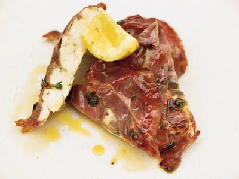

Chicken and Posh Ham

Ingredients
Method
Stops your screen dimming and locking while your hands are busy. It switches off when you leave this page.
To prepare the chicken
- Grate the 35g Parmesan and pick the leaves off the stalks of the 2 sprigs of thyme.
- Carefully score the underside of the 2 chicken breasts in a criss-cross fashion with a small knife. Season with a little freshly ground black pepper (you don't need salt as the prosciutto is quite salty).
- Lay your breasts next to each other and sprinkle over most of the thyme leaves. Grate a little zest from the 1 lemon over them and sprinkle with Parmesan.
- Lay 3 prosciutto slices on each chicken breast overlapping them slightly. Drizzle a little olive oil and sprinkle with the remaining thyme leaves.
- Put a square of plastic wrap over each breast and give them a few really good bashes with the bottom of a saucepan until they are about 1cm thick.
To cook the chicken
- Put a frying pan on a medium heat. Remove the plastic wrap and carefully transfer the chicken breasts, prosciutto side down, into the pan. Drizzle over some olive oil. Cook for 3 minutes on each side, turning halfway through giving the ham side an extra 30 seconds to crisp up.
To serve
- Either serve the chicken breasts whole or cut them into thick slices and pile them on a plate. Serve with lemon wedges for squeezing over and a good drizzle of olive oil.
Notes
Lovely with mashed potatoes and green veggies or a crunchy salad.